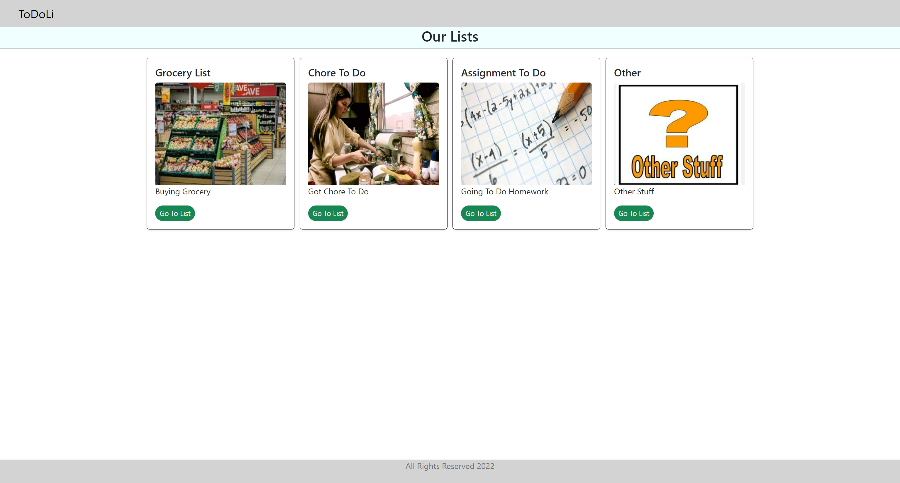
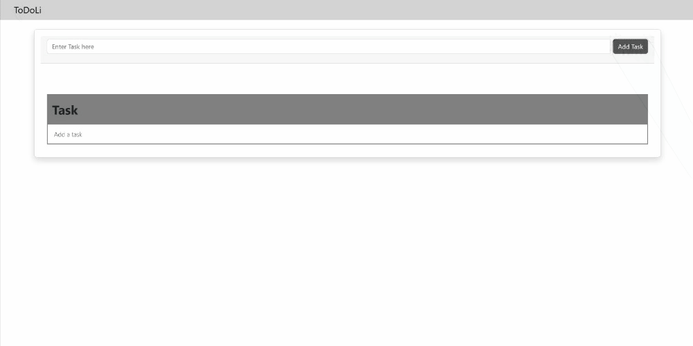
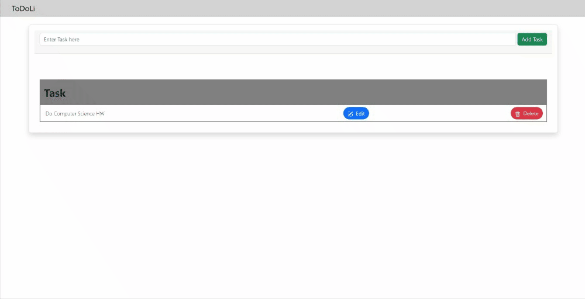
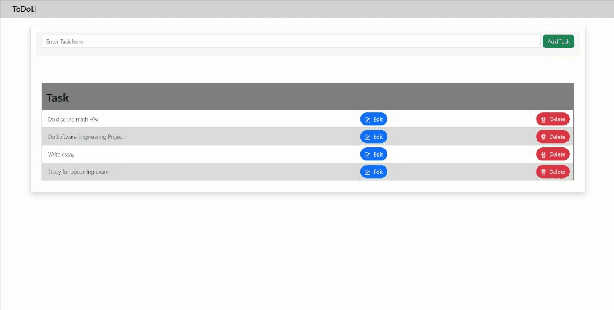

ToDoLi

ToDoLi is a web application that allows users to keep track of their daily tasks. Whether it is used to keep track of homework assignments, chores, or groceries they need to buy, ToDoLi is there to help them. This application was built with a friend of mine, and was in development from December 2022 to February 2023. We decided to develop this application using Javascript, React, HTML, CSS, and Bootstrap. This project taught us how to design an application from scratch using a basic wireframe, and familiarized us more with how to use React, and React Routing to link us to multiple pages.
Design

How it Works
Upon opening the application, the user will be welcomed with four pre-defined categories: "Buying Groceries," "Chores to Do," "Homework," and "Other." Depending on the task that they would like to track, the user can pick any one of those four categories. When clicking on their desired category, the user is then taken to the tasks page, where they can add, edit and delete tasks.To add a task, the user would type in the task in the text box at the top of the tasks page. Once they typed in their task, they should then click on the "Add Task" button. The task then gets added to the task list below. Adding a task was achieved using useState and onClick methods. The tasks were put into a task array, and were displayed using Javascript mappings to a JSX element. The tasks were also stored in the browser's local storage. 
If a user wants to edit a task on their list, the user should click on that task's corresponding "Edit" button. Clicking the "Edit" button will bring up another text box for the user to type in their new task to replace the old one. Once they finish typing their new task, the "Edit Task" button should be clicked to apply those changes. The new, edited task should replace the previous one. 
To delete a task, clicking on the "Delete" button for that corresponding task will remove it. 